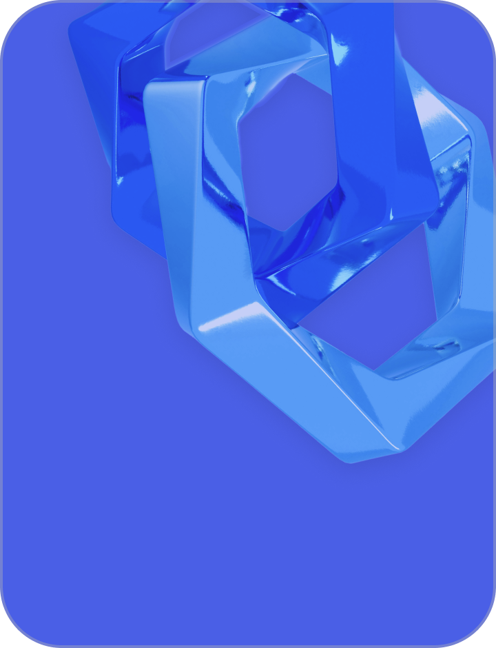

<section class="top">
    <div class="container">
        <div class="top__body">
            <div class="top__body-start">
                <div class="top__body-start-item">
                    
                    <div class="top__body-start-item-top">
                        <span>Деньги и рост бизнеса</span>
                        <svg width="27" height="27" viewBox="0 0 27 27" fill="none" xmlns="http://www.w3.org/2000/svg">
                            <path d="M1 26L26 1M26 1V18.9104M26 1H7.07143" stroke="#F7F7F7" stroke-width="2"
                                stroke-linecap="round" stroke-linejoin="round" />
                        </svg>
                    </div>
                    <p>Сайты на верхних позициях в Яндексе автоматически воспринимаются как более надежные и
                        авторитетные в глазах пользователей.</p>
                </div>
                <div class="top__body-start-item">
                    <div class="top__body-start-item-top">
                        <span>Повышение трафика</span>
                        <svg width="27" height="27" viewBox="0 0 27 27" fill="none" xmlns="http://www.w3.org/2000/svg">
                            <path d="M1 26L26 1M26 1V18.9104M26 1H7.07143" stroke="#15007F" stroke-width="2"
                                stroke-linecap="round" stroke-linejoin="round" />
                        </svg>
                    </div>
                    <p>Когда ваш сайт находится высоко
                        в поисковике, на него заходит больше людей. Чем больше людей посещает сайт, тем больше шансов,
                        что они
                        что-то купят.
                    </p>
                </div>
            </div>
            <div class="top__body-end">
                <div class="top__body-end-text">
                    Зачем выводить
                    <span>сайт в ТОП?</span>
                </div>
                <div class="top__body-end-block">
                    <div class="top__body-end-block-item">
                        
                        <div class="top__body-end-item-top">
                            <span>Увеличение видимости</span>
                            <svg width="27" height="27" viewBox="0 0 27 27" fill="none"
                                xmlns="http://www.w3.org/2000/svg">
                                <path d="M1 26L26 1M26 1V18.9104M26 1H7.07143" stroke="#F7F7F7" stroke-width="2"
                                    stroke-linecap="round" stroke-linejoin="round" />
                            </svg>
                        </div>
                        <p>Ваш сайт становится более заметным для потенциальных клиентов.
                            Это повышает шансы увеличить количество посещений сайта.
                        </p>
                    </div>
                    <div class="top__body-end-block-last">
                        <p class="top__body-end-block-last-desc">
                            Вот несколько ключевых причин, почему стоит стремиться
                            к попаданию в ТОП:
                        </p>
                        <div class="top__body-end-block-last-item">
                            <div class="top__body-end-block-last-item-top">
                                <span>Преимущество перед конкурентами</span>
                                <svg width="27" height="27" viewBox="0 0 27 27" fill="none"
                                    xmlns="http://www.w3.org/2000/svg">
                                    <path d="M1 26L26 1M26 1V18.9104M26 1H7.07143" stroke="#15007F" stroke-width="2"
                                        stroke-linecap="round" stroke-linejoin="round" />
                                </svg>
                            </div>
                            <p>
                                Занимая высокие позиции в поисковой выдаче, Вы автоматически обгоняете конкурентов,
                                которые остаются на более низких строчках
                                или даже на второй странице.
                            </p>
                        </div>
                    </div>
                </div>
            </div>
        </div>
    </div>
</section>